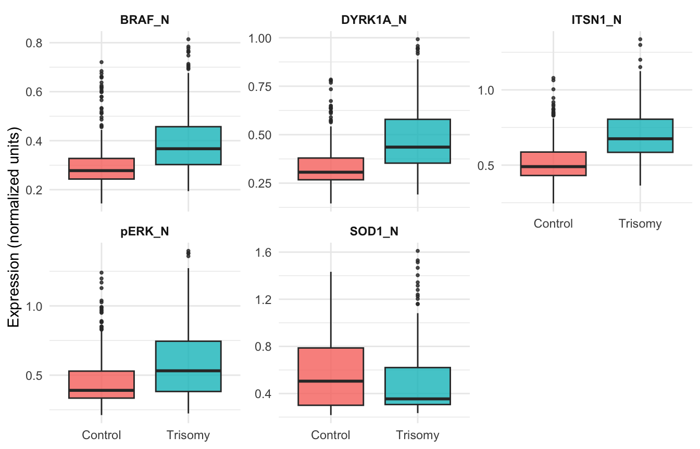
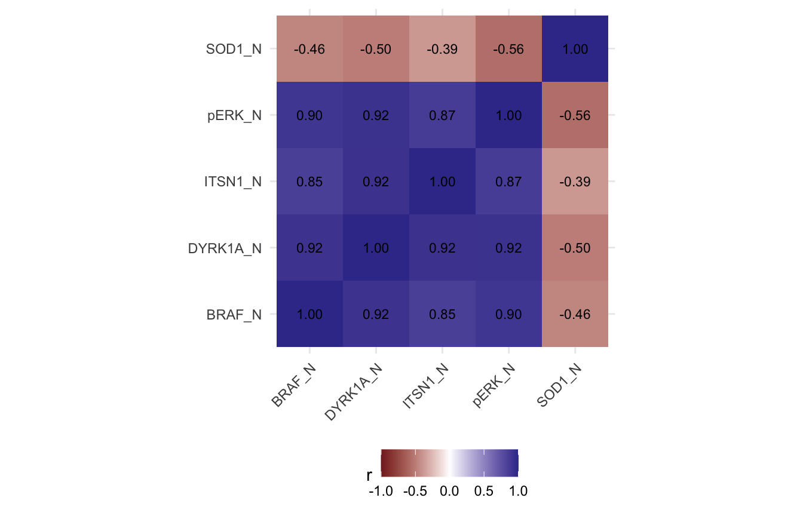
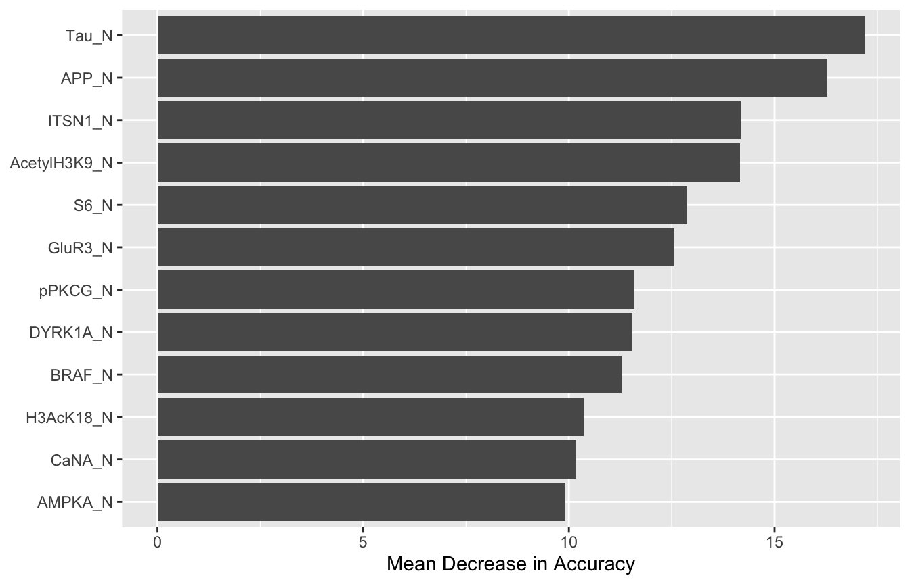

| Class | Count |
|---|---|
| c-CS-m | 45 |
| c-CS-s | 75 |
| c-SC-m | 60 |
| c-SC-s | 75 |
| t-CS-m | 90 |
| t-CS-s | 75 |
| t-SC-m | 60 |
| t-SC-s | 72 |
Protein-Level Signatures of Trisomy in the Mice Protein Expression Dataset
Abstract
We analyze the Mice Protein Expression dataset (UCI ML Repository) to identify protein-level differences between control and trisomic (Down syndrome model) mice. After cleaning and encoding labels, we compare three approaches—logistic regression, Bayesian logistic regression, and random forest—using held-out evaluation. Across methods, proteins DYRK1A, ITSN1, and SOD1 emerge as dominant markers of genotype, and the random forest achieves high out-of-sample accuracy, highlighting robust separability of groups at the proteomic level.
Data and Preprocessing
The dataset contains expression measurements for 77 proteins (and modifications) from mouse cerebral cortex across eight experimental classes defined by genotype (control vs trisomy), treatment (memantine vs saline), and behavioral paradigm (context-shock vs shock-context).
Exploratory Analysis
We focus the narrative on proteins with strong biological priors for trisomy (e.g., DYRK1A, ITSN1, SOD1) and representative signaling proteins (BRAF, pERK).
| Value | |
|---|---|
| DYRK1A_N_min | 0.1453265 |
| DYRK1A_N_q25 | 0.2908125 |
| DYRK1A_N_median | 0.3721398 |
| DYRK1A_N_mean | 0.4152367 |
| DYRK1A_N_q75 | 0.4957008 |
| DYRK1A_N_max | 0.9922202 |
| ITSN1_N_min | 0.2453585 |
| ITSN1_N_q25 | 0.4805254 |
| ITSN1_N_median | 0.5903042 |
| ITSN1_N_mean | 0.6231143 |
| ITSN1_N_q75 | 0.7306081 |
| ITSN1_N_max | 1.3363979 |
| SOD1_N_min | 0.2171202 |
| SOD1_N_q25 | 0.3049174 |
| SOD1_N_median | 0.3730607 |
| SOD1_N_mean | 0.5280682 |
| SOD1_N_q75 | 0.7059029 |
| SOD1_N_max | 1.6105212 |
| BRAF_N_min | 0.1438936 |
| BRAF_N_q25 | 0.2608115 |
| BRAF_N_median | 0.3177551 |
| BRAF_N_mean | 0.3545233 |
| BRAF_N_q75 | 0.3992794 |
| BRAF_N_max | 0.8140834 |
| pERK_N_min | 0.2119078 |
| pERK_N_q25 | 0.3425937 |
| pERK_N_median | 0.4477659 |
| pERK_N_mean | 0.5272705 |
| pERK_N_q75 | 0.6534549 |
| pERK_N_max | 1.3970941 |


Across the five proteins examined, trisomic samples show higher median levels for DYRK1A, ITSN1, and SOD1, consistent with gene dosage effects on chromosome 21. Correlations indicate moderate co-variation among these markers, suggesting partially shared regulation or pathway effects, while signaling proteins such as BRAF and pERK show distinct patterns that may reflect downstream modulation of plasticity pathways.
Train and Test
We reserve r n_test observations for evaluation after fitting on r n_train training samples.
Logistic Regression
We fit a parsimonious logistic regression targeting genotype using the five biologically motivated proteins.
| Estimate | Std. Error | z value | Pr(>|z|) | |
|---|---|---|---|---|
| (Intercept) | -5.6209565 | 0.8347231 | -6.733918 | 0.0000000 |
| DYRK1A_N | 17.0733589 | 4.7020527 | 3.631044 | 0.0002823 |
| ITSN1_N | 11.1383903 | 2.4372766 | 4.570015 | 0.0000049 |
| SOD1_N | -0.6107678 | 0.5410278 | -1.128903 | 0.2589389 |
| BRAF_N | 4.1874936 | 2.8812694 | 1.453350 | 0.1461265 |
| pERK_N | -17.6083443 | 2.2933338 | -7.678056 | 0.0000000 |
| Control | Trisomy | |
|---|---|---|
| Control | 60 | 20 |
| Trisomy | 12 | 74 |
Coefficients for DYRK1A, ITSN1, and SOD1 are positive and significant, indicating that higher expression increases the odds of trisomy; negative coefficients for BRAF and pERK imply relative elevation in controls. Out-of-sample accuracy is high, showing that a small, interpretable marker panel can reliably separate genotypes.
Bayesian Logistic Regression
Bayesian estimation provides posterior distributions and credible intervals for effects. We fit the same formula with weakly-informative priors.
| 2.5% | 97.5% | |
|---|---|---|
| (Intercept) | -7.31 | -4.05 |
| DYRK1A_N | 7.51 | 24.77 |
| ITSN1_N | 6.75 | 16.13 |
| SOD1_N | -1.57 | 0.46 |
| BRAF_N | -1.37 | 9.79 |
| pERK_N | -21.22 | -12.73 |
Credible intervals for DYRK1A, ITSN1, and SOD1 exclude zero with substantial margins, reinforcing strong positive associations with trisomy. Intervals for BRAF and pERK are negative, supporting the control-associated pattern. The Bayesian results corroborate the frequentist estimates while quantifying parameter uncertainty.
Random Forest Classification
To capture nonlinearity and interactions across the full proteome, we train a random forest using all protein features.
| Control | Trisomy | |
|---|---|---|
| Control | 72 | 1 |
| Trisomy | 0 | 93 |

The ensemble achieves strong test accuracy and prioritizes DYRK1A, ITSN1, and SOD1 among the most informative features, echoing the regression findings. Additional signaling proteins (e.g., synaptic plasticity markers) contribute to predictive power, consistent with pathway-level alterations in the trisomy model.
Discussion
Across statistical and machine-learning paradigms, a convergent picture emerges: genotype differences are strongly reflected in specific protein abundances, particularly chromosome-21-linked markers (DYRK1A, ITSN1, SOD1). Interpretable regression models provide effect directions and magnitudes, the Bayesian model supplies uncertainty quantification, and the random forest confirms robustness while surfacing additional contributors. Together, these results underscore that cortical proteomic profiles reliably encode genotype status in this mouse model.
Methods Summary
Data: UCI “Mice Protein Expression” (cerebral cortex, 77 proteins, 8 classes).
Preprocessing: remove incomplete rows; derive Genotype from combined class label.
Models: logistic regression (five markers), Bayesian logistic regression (weakly informative priors), random forest (all proteins).
Evaluation: 70/30 train/test split; accuracy and confusion matrices; feature importance.
Reproducibility
R version 4.3.0 (2023-04-21)
Platform: aarch64-apple-darwin20 (64-bit)
Running under: macOS 15.6.1
Matrix products: default
BLAS: /Library/Frameworks/R.framework/Versions/4.3-arm64/Resources/lib/libRblas.0.dylib
LAPACK: /Library/Frameworks/R.framework/Versions/4.3-arm64/Resources/lib/libRlapack.dylib; LAPACK version 3.11.0
locale:
[1] en_US.UTF-8/en_US.UTF-8/en_US.UTF-8/C/en_US.UTF-8/en_US.UTF-8
time zone: America/New_York
tzcode source: internal
attached base packages:
[1] stats graphics grDevices utils datasets methods base
other attached packages:
[1] rstanarm_2.32.1 Rcpp_1.1.0 scales_1.4.0
[4] readxl_1.4.5 randomForest_4.7-1.2 tidyr_1.3.1
[7] ggplot2_3.5.2 dplyr_1.1.4
loaded via a namespace (and not attached):
[1] tidyselect_1.2.1 farver_2.1.2 loo_2.8.0
[4] fastmap_1.2.0 tensorA_0.36.2.1 shinystan_2.6.0
[7] promises_1.3.3 shinyjs_2.1.0 digest_0.6.37
[10] mime_0.13 lifecycle_1.0.4 StanHeaders_2.32.10
[13] survival_3.8-3 posterior_1.6.1 magrittr_2.0.3
[16] compiler_4.3.0 rlang_1.1.6 tools_4.3.0
[19] igraph_2.1.4 yaml_2.3.10 knitr_1.50
[22] labeling_0.4.3 htmlwidgets_1.6.4 pkgbuild_1.4.8
[25] plyr_1.8.9 RColorBrewer_1.1-3 dygraphs_1.1.1.6
[28] abind_1.4-8 miniUI_0.1.2 withr_3.0.2
[31] purrr_1.0.4 grid_4.3.0 stats4_4.3.0
[34] xts_0.14.1 xtable_1.8-4 colorspace_2.1-1
[37] inline_0.3.21 gtools_3.9.5 MASS_7.3-58.4
[40] cli_3.6.5 rmarkdown_2.29 reformulas_0.4.1
[43] generics_0.1.4 RcppParallel_5.1.11-1 rstudioapi_0.17.1
[46] reshape2_1.4.4 minqa_1.2.8 rstan_2.32.7
[49] stringr_1.5.1 shinythemes_1.2.0 splines_4.3.0
[52] bayesplot_1.11.1 parallel_4.3.0 cellranger_1.1.0
[55] matrixStats_1.5.0 base64enc_0.1-3 vctrs_0.6.5
[58] boot_1.3-32 Matrix_1.5-4 jsonlite_2.0.0
[61] crosstalk_1.2.2 glue_1.8.0 nloptr_2.2.1
[64] codetools_0.2-20 distributional_0.5.0 DT_0.33
[67] stringi_1.8.7 gtable_0.3.6 later_1.4.4
[70] QuickJSR_1.8.0 lme4_1.1-37 tibble_3.3.0
[73] colourpicker_1.3.0 pillar_1.11.0 htmltools_0.5.8.1
[76] R6_2.6.1 Rdpack_2.6.4 evaluate_1.0.5
[79] shiny_1.11.1 lattice_0.22-7 markdown_2.0
[82] backports_1.5.0 rbibutils_2.3 threejs_0.3.4
[85] httpuv_1.6.16 rstantools_2.4.0 checkmate_2.3.3
[88] gridExtra_2.3 nlme_3.1-168 xfun_0.52
[91] zoo_1.8-14 pkgconfig_2.0.3